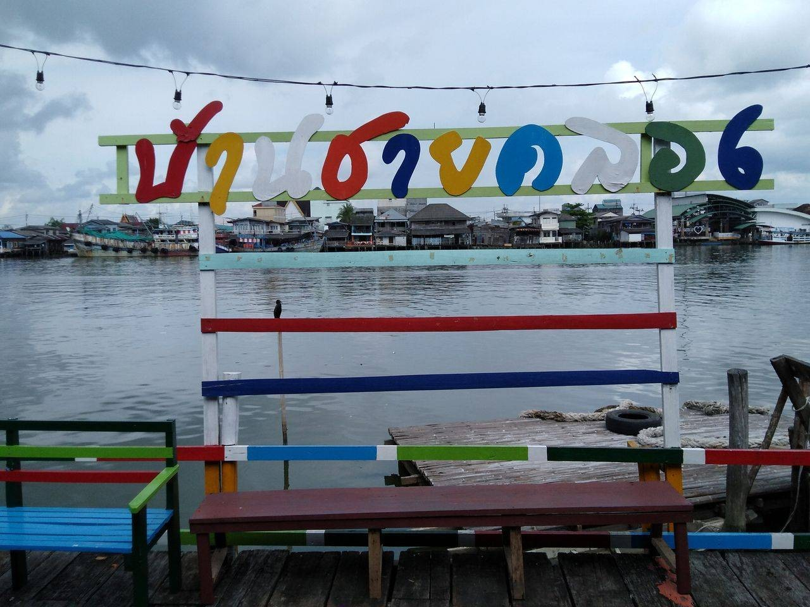
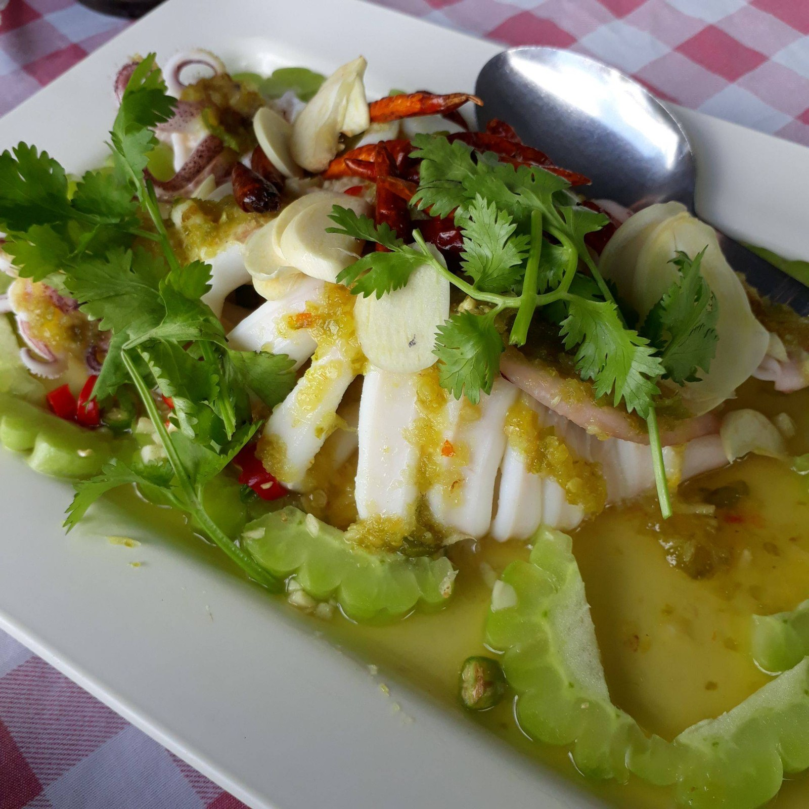
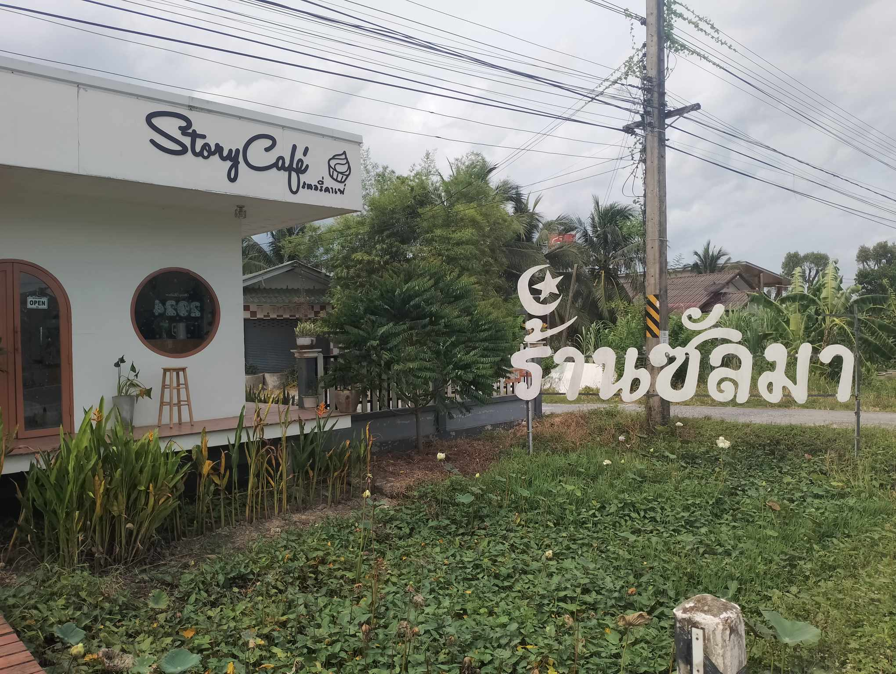
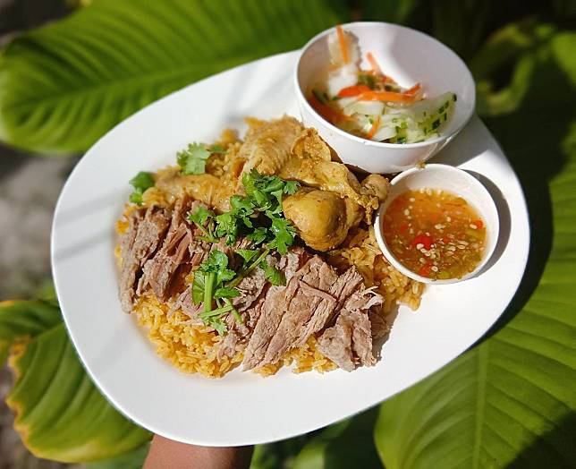
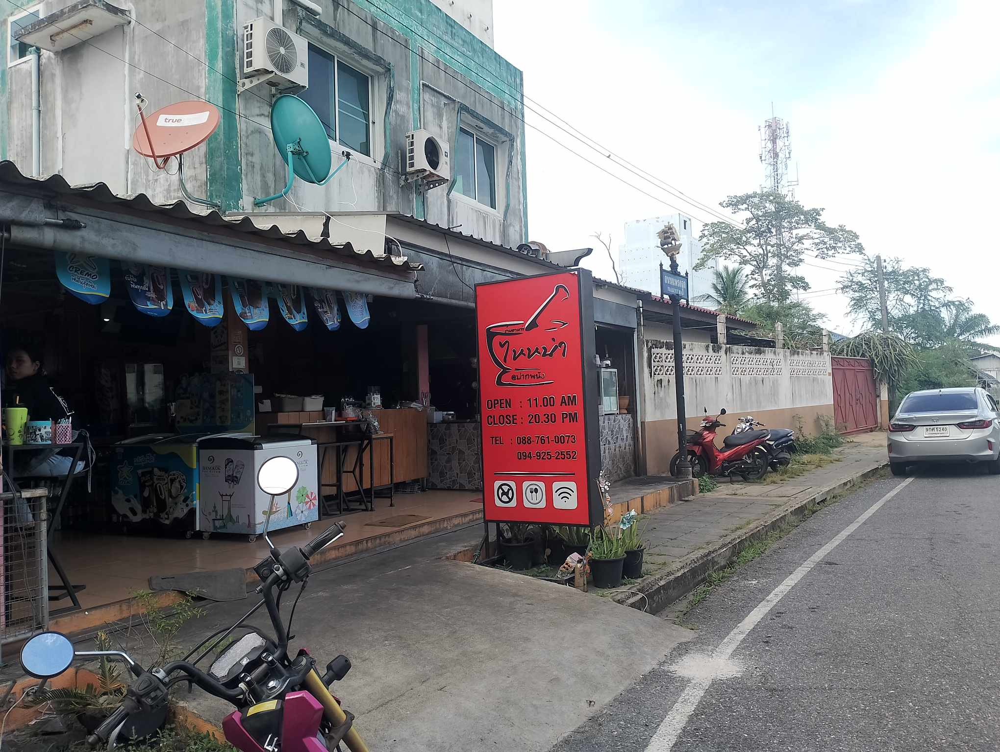
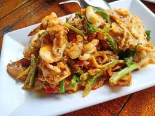
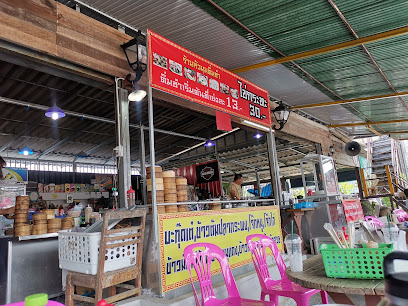
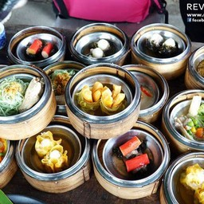
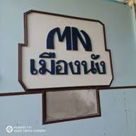
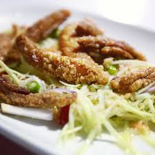

ร้านอาหาร
1.ร้านอาหารบ้านชายคลอง

รูปภาพจาก ; wongnai
.....ร้านบ้านชายคลอง (Ban Chaiklong Restaurant) ปากพนัง ร้านบ้านชายคลองทานอาหารพร้อมวิวริมน้ำยามเย็นนี้ลมพัดโชยแสนสบาย อาหารก็มีเมนูอร่อยๆหลายอย่าง มาเที่ยวปากพนังกัน แวะมาทานอาหารที่ร้านนี้กันนะครับ ร้านบ้านชายคลองอยู่อำเภอปากพนัง ถนนพานิชสัมพันธ์ เลยธนาคารธนชาติมานิดนึงสังเกตป้ายชื่อร้านตรงปากซอยครับ สอบถามเพิ่มเติมโทร. 075-333831, 081-9566007
GOOGLE MAP : https://maps.app.goo.gl/q3fmK72kY32Ngh9b7
เวลาเปิด-ปิด : 10:00-21:00
เมนูแนะนำ ปลาหมึกนึ่งมะนาว กุ้งผัดพริกเกลือ ขาหมูหมั่นโถ่ว

รูปภาพจาก ; wongnai
2.ร้านซัลมา ปากพนัง

.....เป็นร้านขายอาหารมุสลิม/ฮาลาล มีเมนูข้าวหมกไก่ ข้าวหมกเนื้อ ซุปเนื้อวัว ซุปหางวัว ซุปไก่ร้านโล่งๆ ที่นั่งเยอะดี มีที่จอดรถอาหารออกรวดเร็ว ราคาไม่แพงข้าวหมกไก่รสชาติดี หอมเครื่องเทศ ไก่ไม่เหนียว ไม่แข็ง น้ำจิ้มไก่อร่อย ซุปเนื้อวัว รสชาติใช้ได้ รสไม่จัดมาก ไม่เผ็ด กำลังกลมกล่อม เนื้อนุ่ม ไม่เหนียว น้ำเปล่าฟรี บริการตัวเอง
เวลาเปิด-ปิด : 07:00-17:00 หยุดทุกวันเสาร์
GOOGLE MAP : https://maps.app.goo.gl/nudhn8NHiraRVHsa6

รูปภาพจาก : thai.ac
3.ร้านอาหารไหหนำ

.....ไหหนำ ชื่อร้านพลันนึกถึงอาหารจีน อย่ากระนั้นเลยครับ ไหหนำป็นอาหารสไตล์ข้าวต้มโต้รุ่ง มีอาหารไทยมากมายเมนูรวมไปถึงจานเดียว และยังมีอาหารอีสานต้มตำอีกเพียบครับ
เวลาเปิด-ปิด : 11:00-21:00
GOOGLE MAP : https://maps.app.goo.gl/e8WHGZhURvMJ9etM9
เมนูแนะนำ ยำสามกรอบ

รูปภาพจาก ; wongnai
4.หัวมุมติ่มซำ

.....ร้านเปิดมาเกือบ 40 ปี กับบรรยากาศท้องถิ่นสบายๆหน้าท่าเรือ มีหลากหลายเมนูให้เลือกไม่ว่าจะเป็นติ่มซำ ปาท่องโก๋ โจ๊ก บะกุ๊ดเต๋ ข้าวมันไก่บ้าน หมูแดง หมูกรอบ ขนมหวานและเครื่องดื่ม ในราคาชาวบ้านน่าคบหา
เวลาเปิด-ปิด : จันทร์ พุธ พฤหัสบดี 10:00-19:00
อังคาร ศุกร์ เสาร์ อาทิตย์ 06:30-15:30
GOOGLE MAP : https://maps.app.goo.gl/rMwDVsKkq7qQ2r7A6

รูปภาพจาก ; wongnai
5.ครัวเมืองนังซีฟู้ด

รูปภาพจาก ; wongnai
..... ร้านอาหารคู่โรงแรมเก่าแห่งเมืองปากพนัง บรรยากาศโดยรอบของร้านบ่งบอกถึงความเก่าแก่ ผ่านร้อนผ่านหนาวมามากมาย สัมผัสได้เมื่ิอย่างเข้าสู่ร้านโดยไม่ต้องมาบรรยายหรือบอกเล่าใดๆ หมี่ผัดปากพนังคือเมนูเด็ดนำเสนอของทางร้าน และยังมีเมนูซีฟู้ดอีกหลายอย่างให้ลองชิม
เวลาเปิด-ปิด : 12:00-20:00
GOOGLE MAP : https://maps.app.goo.gl/BKNxkAUBWh3DcVbL6

รูปภาพจาก ; wongnai